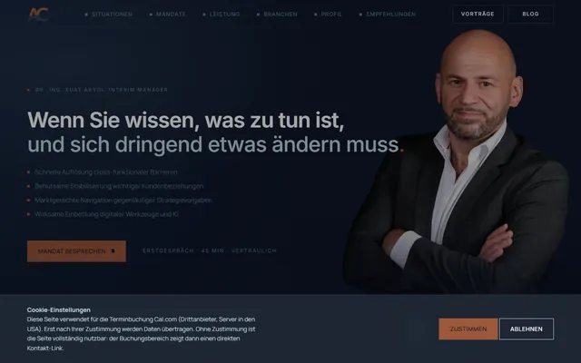
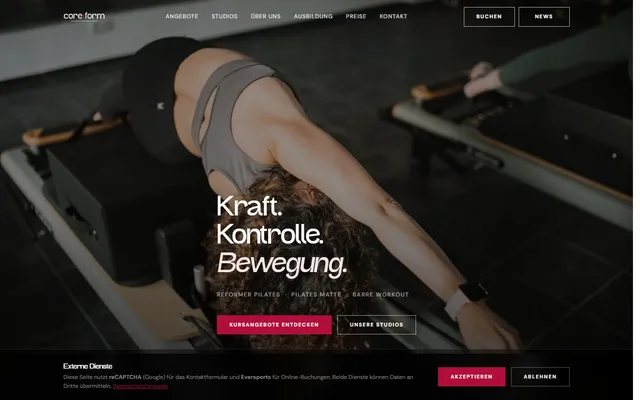
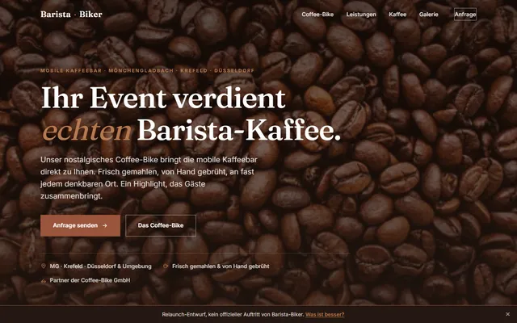
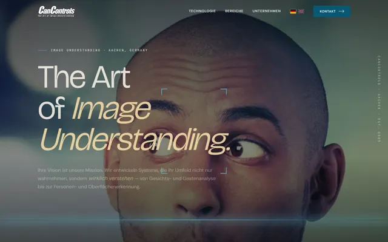
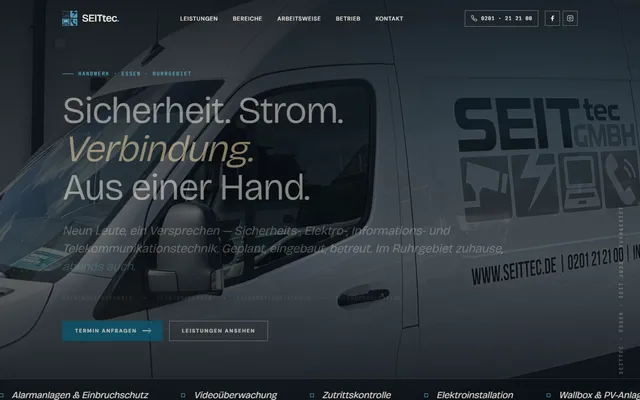

Start / Über diesen Entwurf
Redesign-Demonstrator
Über diesen Entwurf.
Was Sie hier sehen, was anders und neu ist gegenüber der bisherigen Seite, was für den Live-Betrieb noch offen wäre und warum sich die Zusammenarbeit lohnt.
Was Sie hier sehen, was anders und neu ist gegenüber der bisherigen Seite, was für den Live-Betrieb noch offen wäre und warum sich die Zusammenarbeit lohnt.
Der heutige Auftritt des MS Bootshaus Rodenkirchen läuft auf einem Baukasten: ein Template mit fremdem Layout und technischem Ballast, das langsamer lädt und an ein einzelnes Werkzeug gebunden ist. Dieser Entwurf zeigt die Alternative: ein handgebauter, eigener Auftritt, der zeigt, was das Haus wirklich ausmacht, spürbar schneller lädt und von niemandem außer Ihnen geändert werden kann.
Von der simplen Ein-Seiten-Lösung bis zur High-End-Plattform. Wo dieser Entwurf liegt, danach richten sich Aufwand und Preis.
Die Farbwelt stammt aus Ihrem heutigen Auftritt. Sie wurde nicht ersetzt, sondern zu einem ruhigen, wiedererkennbaren System zusammengefügt.
Für die Überschriften eine ruhige Schrift ohne die kleinen Häkchen an den Buchstaben, verwandt mit der Ihres heutigen Auftritts. Für den Fließtext eine gut lesbare Textschrift. Beide werden vom eigenen Server geladen, nicht von fremden Diensten.
Nebeneinander gestellt: die bisherige Template-Seite und dieser Entwurf. Fair bewertet.
| Merkmal | Bisherige Seite | Dieser Entwurf |
|---|---|---|
| Design: individuell statt Baukasten | Template | Individuell |
| Fotos großflächig in Szene gesetzt | Kacheln | Ja |
| Klare Handlungsführung (Reservieren, Anrufen) | Verstreut | Durchgängig |
| Branchen-Schema (Restaurant / LocalBusiness) | Nein | Ja |
| Öffnungszeiten & Küche als auswertbare Daten | Nein | Ja |
| Auffindbar für KI-Suche (GEO) | Nein | Ja |
| Social-Vorschaubild beim Teilen | Nein | Ja |
| Nutzungsgeschwindigkeit & mobile Bedienung | Viel Fremd-Ballast | Schlank |
Gemessen, nicht behauptet: Die alte Seite lädt rund zehn Fremd-Bibliotheken und ihre Schriften von fremden Servern. Der Entwurf ist schlank und komplett selbst gehostet.
Sprechender Titel, Meta-Beschreibung, saubere Überschriften und Bild-Alt-Texte. Google ordnet die Seite richtig ein, statt nur einen Standard-Titel zu sehen.
ChatGPT und Perplexity empfehlen, was sie strukturiert verstehen. Der Entwurf liefert Restaurant-Branchendaten maschinenlesbar, die alte Seite nicht.
Ein kleines Stylesheet und Skript statt Bootstrap, jQuery und Co., dazu WebP-Bilder. Weniger Bytes, spürbar schneller, gerade mobil.
Weniger Fremd-Code, kleinere Angriffsfläche. Schriften selbst gehostet, keine Besucherdaten an Google (DSGVO-freundlich).
Große Bilder statt Kacheln, klare Führung, durchgehender Reservierungs-Faden, Galerie zum Durchklicken und ein lebendiges Handy-Menü.
Sprungmarke, Screenreader-Beschriftungen, eine H1 je Seite, sichtbare Fokus-Ringe, Rücksicht auf reduzierte Bewegung. Auch per Tastatur bedienbar.
Weder anonyme Großagentur mit langen Wegen noch Gelegenheitsanbieter, sondern genau der Sweet Spot dazwischen.
Ein vollständiger Auftritt zu einem festen Preis, mit klarem Anfang und klarem Ende. Fest heißt fest: kein Nachschlag unterwegs, kein Kleingedrucktes.
Ein erfahrener Partner direkt vor Ort, ein Ansprechpartner, klare Verantwortung. Alles aus einer Hand, ohne Agentur-Overhead und ohne Bastellösung.
Der Auftritt lässt sich jederzeit erweitern: Online-Reservierung, ein News-Bereich für Veranstaltungen oder später ein KI-Assistent für Gästefragen. In Stufen von kostenfrei bis kleine Monatsgebühr, ganz nach Bedarf.
Volle Nutzungsrechte an der fertigen Website, kein Abo-Zwang, kein Nachverkauf durch die Hintertür. Betreuung nach Bedarf, entweder als schlanke Pauschale oder als transparente Einzelaufträge.
Von der eigenen Website über ein Pilates-Studio, ein Hightech-Unternehmen und einen Handwerksbetrieb bis zum Steuerberater, alle mit KI-Unterstützung gebaut.



Mobiles Kaffeecatering mit dem Coffee-Bike, ebenfalls ein Redesign-Entwurf.
Live ansehen
